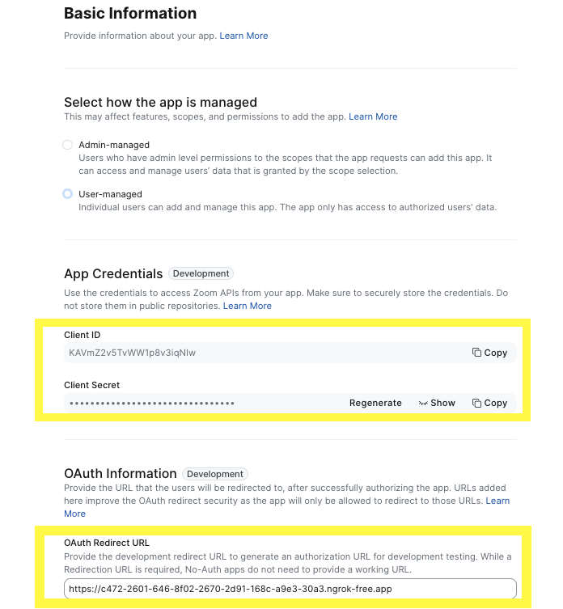

Cortex Agents simplify AI-powered data interactions via a REST API, combining hybrid search and accurate SQL generation. They streamline workflows by managing context retrieval, natural language to SQL conversion, and LLM orchestration. Response quality is enhanced with in-line citations, answer abstention, and multi-message context handling. Developers benefit from a single API call integration, real-time streamed responses, and reduced latency for optimized applications.
Note: Cortex Agents is in Public Preview as of 04/25/2025.
Why Cortex Agents?
Business users have typically relied on BI dashboards and reports for data insights, but these tools often lack flexibility, requiring users to wait on busy data analysts for updates. Cortex Agents addresses this with a natural language interface allowing organizations to develop conversational applications. This enables business users to query data in natural language and get accurate answers in near real time.
Under the hood it is a stateless REST API that unifies Cortex Search's hybrid search and Cortex Analyst's SQL generation (with 90%+ accuracy). It streamlines complex workflows by handling context retrieval, converting natural language to SQL via semantic models, and managing LLM orchestration and prompts. Enhanced with in-line citations, answer abstention for irrelevant queries, and multi-message conversation context management, it offers single API call integration, real-time streamed responses, and reduced latency. Together, these capabilities allow you to search sales conversations, translate text into SQL for analytical queries, and blend structured and unstructured data for natural language interactions.
Learn more about Cortex Agents, Cortex Analyst, and Cortex Search.
Why Zoom?
Zoom isn't just for video calls anymore. It's a modern, flexible collaboration platform that brings together video, voice, chat, and integrations under one roof. It is a communication platform designed to streamline workplace interactions and allows teams to organize conversations by channels, send direct messages, share files, and integrate with other tools for a seamless workflow. Zoom Team Chat goes beyond basic messaging. It's your interactive workspace and a powerful platform for bots and automation.
Prerequisites
- A Snowflake account in one of these regions and also where PARSE_DOCUMENT is available. If you do not have one you can register for a free trial account.
- A Zoom Account with access to Zoom App Marketplace.
- NOTE: You can create a free Basic account for getting through this guide.
- Zoom Workspace installed locally. (You should be able to download it after you log into your Zoom account.)
- NOTE: Zoom Team Chat does not currently work with the Zoom web client.
- ngrok or a similar API gateway to route requests from Zoom to a web server running locally.
- On a Mac, run
brew install --cask ngrok - Install your auth token. To learn more, click here
- Run
ngrok config add-authtoken
- On a Mac, run
What You Will Learn
- How to setup Cortex Analyst
- How to setup Cortext Search
- How to use Cortex Agents and Cortex Inference REST APIs and integrate it in Zoom Team Chat
What You Will Build
A conversational interface using Cortex Agents and Cortex Inference REST APIs integrated in Zoom Team Chat.
Step 1
Clone the GitHub repo.
Step 2
In Snowsight, create a SQL Worksheet and open setup.sql to execute all statements in order from top to bottom. This is to create a database, schema, and tables SUPPORT_TICKETS and SUPPLY_CHAIN with data loaded from AWS S3 for both tables. And also to create Snowflake managed internal stages for storing the semantic model specification files and PDF documents.
Step 3
Use Snowsight to upload the support tickets semantic model spec file and the supply chain semantic model spec file to the DASH_SEMANTIC_MODELS stage.
Step 4
Use Snowsight to upload six PDF documents to the DASH_PDFS stage.
Step 5
In Snowsight, create a SQL Worksheet and open cortex_search_service.sql to execute all statements in order from top to bottom. This is to create a Cortex Search service for getting insights from the PDF documents. NOTE: PARSE_DOCUMENT is in Public Preview as of 04/23/2025.
Step 6
Configure key-pair authentication and assign the public key to your user in Snowflake and store/save/copy the private key file (.p8) in your cloned app folder.
Step 1
Signin and start your Zoom Workplace running locally.

Step 2
In a terminal window, browse to the cloned repo sfguide-integrate-snowflake-cortex-agents-with-zoom folder and run the following commands to create Python environment and install the Python packages and dependencies required for the application.
python3 -m venv zoomenv
source zoomenv/bin/activate
pip install -r requirements.txt
Step 3
In the same folder, create a .env file and add these variables.
- NOTE: Instructions on setting the values will follow so keep this file open/handy.
ZOOM_ACCOUNT_ID = ""
ZOOM_CLIENT_ID = ""
ZOOM_CLIENT_SECRET = ""
ZOOM_REDIRECT_URI = ""
ZOOM_BOT_JID = ""
SNOWFLAKE_DEMO_USER=""
SNOWFLAKE_ACCOUNT="<your-account-identifier>"
SNOWFLAKE_AGENT_ENDPOINT='https://<your-org>-<your-account>.snowflakecomputing.com/api/v2/cortex/agent:run'
SNOWFLAKE_INFERENCE_ENDPOINT='https://<your-org>-<your-account>.snowflakecomputing.com/api/v2/cortex/inference:complete'
# Only change these values if you used different names than provided in this guide
SUPPORT_SEMANTIC_MODEL='@dash_db.dash_schema.semantic_models/support_tickets_semantic_model.yaml'
SUPPLY_CHAIN_SEMANTIC_MODEL='@dash_db.dash_schema.semantic_models/supply_chain_semantic_model.yaml'
VEHICLE_SEARCH_SERVICE='dash_db.dash_schema.vehicles_info'
# Should not change these values
ZOOM_TOKEN_URL = "https://zoom.us/oauth/token"
ZOOM_CHAT_URL = "https://api.zoom.us/v2/im/chat/messages"
MODEL = 'claude-4-sonnet'
RSA_PRIVATE_KEY_PATH='rsa_key.p8'
Step 4
In a new terminal window, run ngrok http 5000.
- Before proceeding, make sure it's running and the output should something like the following with a forwarding URL like so
https://9b51-2601-646-8f02-2670-ddd6-ee13-476-441f.ngrok-free.app

- Copy the forwarding URL and set it for ZOOM_REDIRECT_URI in your
.envfile
Step 5
Log into your Zoom account on the web.
Step 6
On the left nav, click on Admin » App Marketplace. This should open Zoom App Marketplace for your account.
Step 7
On the top-right, click on Develop » Build App and select General App

Step 8
On the left nav, click on Basic Information
- Copy Client ID and Client Secret and set them for ZOOM_CLIENT_ID and ZOOM_CLIENT_SECRET in your
.envfile and for OAuth Redirect URL set it to the same value as ZOOM_REDIRECT_URI as in step 3 above.

Step 9
On the left nav, click on Features » Surface
- Select Team Chat under "Select where to use your app"

- Scroll down and select/turn ON Team Chat Subscription
- Copy Bot JID and set it for ZOOM_BOT_JID in your
.envfile

- Click on the dropdown to expand the Team Chat Subscription view and set Bot Endpoint URL to the same value as ZOOM_REDIRECT_URI as in step 3 above and add
/askcortexsuffix.

- Click on Save button.
Step 10
On the left nav, click on Scopes and add/enable the following scopes:
- imchat:userapp
- app:channel_content:write
- team_chat:write:user_message
- team_chat:write:message_files
- team_chat:write:files
- marketplace:write:notifications
- team_chat:write:user_channel
- team_chat:update:user_channel
- team_chat:delete:user_channel
- team_chat:read:list_user_sessions
- team_chat:read:list_user_messages
- team_chat:read:user_message
Before proceeding, it is important to make sure that ngork is still running. If for some reason you need to restart it, you will need to update the forwarding URL as described in sub-steps 3, 7, 8 in "Setup Application" and also ZOOM_REDIRECT_URI in your .env file.
Step 1
In the same cloned repo sfguide-integrate-snowflake-cortex-agents-with-zoom folder, open a new terminal window and run the following command to start the application.
./zoom_bot.sh
Step 2
In your Zoom account on the web, navigate back to Admin » App Marketplace » Zoom App Marketplace and on the left nav, click on Add your app » Local Test » Add App Now

If all goes well, you should see the following popup

And, clicking on Allow should add it to Zoom Workspace running locally,

Structured Data
Support Tickets
These questions are automatically routed to Cortex Analyst » SUPPORT_SEMANTIC_MODEL to get insights from SUPPORT_TICKETS table.
Question: Can you show me a breakdown of customer support tickets by service type cellular vs business internet?
Question: How many unique customers have raised a support ticket with a ‘Cellular' service type and have ‘Email' as their contact preference?
If all goes well, you should see responses similar to the following:

Supply Chain
These questions are automatically routed to Cortex Analyst » SUPPLY_CHAIN_SEMANTIC_MODEL to get insights from SUPPLY_CHAIN table.
Question: What is the average shipping time for tires from Snowtires Automotive compared to average of our other suppliers?
Question: What about TirePro?

Unstructured Data
These questions are automatically routed to Cortex Search » VEHICLE_SEARCH_SERVICE to get insights from the PDFs.
Question: What are the payment terms for Snowtires?
Question: What's the latest, most effective way to recycle rubber tires?
If all goes well, you should see responses similar to the following:

As you may have noticed, the main application code is in app.py and the Snowflake Cortex AI code is in cortex_chat.py.
Here are some things you should make a note of in case you'd like to extend or modify the application.
app.py
init()
A secure connection to Snowflake is established and an instance of CortexChat is created.
@app.route('/', methods=[‘GET'])
Redirect route that Zoom uses to generate an authorization URL for development and testing purposes.
@app.route('/askcortex', methods=[‘POST'])
Endpoint that sends and receives messages to/from Zoom Team Chat. It calls these methods:
CORTEX_APP.chat(prompt)to get response from Snowflake Cortex Agentsparse_agent_response(response)to parse the Snowflake Cortex Agents responsesend_chat_message(user_jid, to_jid, agent_response)to send the parsed response to Zoom Team Chat
parse_agent_response()
Parses response return by Snowflake Cortex Agents. If the response includes a SQL, in case of structured data, it executes the SQL and then calls CORTEX_APP.data_to_answer(df.to_string()) to translate the dataframe into natural language.
cortex_chat.py
_retrieve_response()
Notice that we've set up and provided two semantic models to the Cortex Agents REST API via tool_spec > type: "cortex_analyst_text_to_sql"; one to extract insights from SUPPORT_TICKETS and another one from SUPPLY_CHAIN structured data sources. Similarly, you may set up additional semantic models as well as multiple search services via tool_spec > type: "cortex_search".
data_to_answer()
Translates the dataframe into natural language. This is done using Snowflake Cortex Inference API with prompt Extract and explain the data in the following dataframe in natural language. Only output the explanation and nothing else.
Congratulations! You've sucessfully integrated Snowflake Cortex AI in Zoom. I hope you found this guide both educational and inspiring.
What You Learned
- How to setup Cortex Analyst
- How to setup Cortext Search
- How to use Cortex Agents and Cortex Inference REST APIs and integrate it in Zoom Team Chat